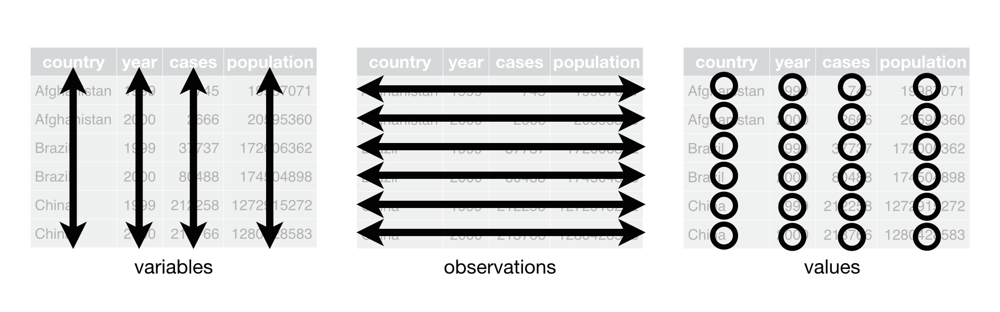

ggplot2?It’s an R package that draws graphs, developed by Hadley Wickham
From the tidyverse website: “ggplot2 is a system for declaratively creating graphics, based on The Grammar of Graphics. You provide the data, tell ggplot2 how to map variables to aesthetics, what [visual marks to use to represent data points], and it takes care of the details.”
… and what’s the Grammar of Graphics? Our ggplot2 cheat sheet says this is “the idea that you can build every graph from the same components: a data set, a coordinate system, and geoms—visual marks that represent data points.”
ggplot2?ggplot2 aids perceptionggplot2 will help you understand how data visualization works, how to figure out what you want your plots to look like and describe this to the computer.ggplot2 you learn how to make better graphs, not just how to make graphs.ggplot2 is powerfulggplot2 is popularggplot2 to communicate with very different audiencesggplot2 is used by data journalists at major outlets BBC and Financial Timesggplot2’s core functions for specific use casesggplot2 is powerful and fallibleggplot2 is a world unto itself (technically, it’s a domain specific language)ggplot2, mistakes are gonna happen - even for existing R users - and that’s fine!ggplot2 works, and finding things that don’t work as expected (or at all!) help us do this tooDataset +
mapping variables in the dataset to aesthetics +
Layers of geoms (symbols to represent data) =
Plot
ggplot2 expects your dataset to be tidy:

aes()theticsx and y (these are position aesthetics)ggplot know about something inside your dataset you have to reference it within aes!ggplot so helpful for thinking about data visualization - you get to choose how you want to map variables to aesthetics and how to represent them in layers in a declarative way.aes()thetics can have different emphasisggplot)geometric symbols to represent dataggplot to draw to represent the data; lines, points, errorbars, ribbons, contours…aesthetics, but different geomsgeomsggplot2 builds plots out of layersgeoms only add one layer at a time+ operatorgeoms and aestheticsgeom needs a dataset and a mapping of variables to aestheticsaes mappings that you set for the whole plot…aesgeomgeoms as being one of three types:geoms that plot each datum for yougeoms that plot summaries of your dataset for yougeoms that plot things that aren’t in your dataset (like reference lines and such). We won’t discuss thesegeom_pointgeom_linegeom_bar (sort of)geom_errorbar (sort of)geom_tilegeom_histogramgeom_densitygeom_violingeom_smoothgeom_contour